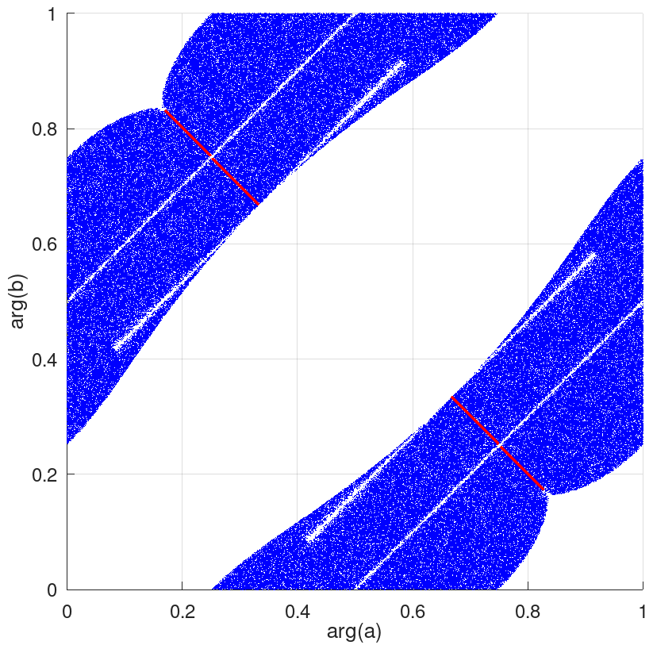

Catalog of CHM
Appendix B: Matrices Found by the Sinkhorn Algorithm
created: 2022-08-05
updated: 2023-02-21 by W. Bruzda
Sinkhorn's algorithm finds plenty of matrices Y with different characteristics described by triplets (N, d, #L), where
N = size(Y), d = d(Y) = defect(Y),
#L ≡ #Λ(Y) = cardinality of Haagerup invariants of Y, and both d and #Λ should be understood as generic values.
Some of them can be recognized as completely new examples of (complex) Hadamard matrices,
some of them can even be expressed analytically – both families and isolated cases.
But still there is a lot of objects in a raw form, for which it is unknown whether they are new or not or it is difficult to find strict and compact expressions for them.
In this (yet another) informal appendix to
Catalog of CHM we present many such finding
in hope that sometime in a future we will have a tool to fully describe all of them.
As usual, if somebody can help/improve or have any idea how to simplify this mess, please contact us.
It is loosely based on
J. Math. Phys. 64, 052201 (2023)
(arXiv:2204.11727),
or rather the paper is loosely based on these notes... ;)
Ever since the Sinkhorn algorithm was adapted to search for new CHM, the set of possibly new matrices has been enlarged significantly. This quickly made the shortage of the Latin alphabet to enumerate consecutive findings. Hence, we propose a new system of names. We follow the convention that the generic output from the Sinkhorn procedure is denoted by either by
Y_N_d_L or YN,d,L
T_N_d_L or TN,d,L
where (N, d, L) was already mentioned at the beginning. Some special matrices might admit individual names reflecting their properties:
BH_N_d_L = BHN,d,L = BH(N, q) = Butson-type CHM ("q" denotes the degree of root of unity)
RH_N_d_L = RHN,d,L = subset of BH; real Hadamard matrix (the classic one)
FH_N_d_L = FHN,d,L = subset of BH; Fourier CHM
SH_N_d_L = SHN,d,L = symmetric CHM
HH_N_d_L = HHN,d,L = Hermitian CHM
However, we do not insist it should be accepted permanently, but at least such a notation will be occasionally used throughout this page and more frequently in Appendix C.
Every matrix (an array of complex numbers) which is an output from the Sinkhorn algorithm is
dephased and checked for simple dependencies between its entries.
By simple we mean something of the form: a = bc/d, i.e. just a ratio of several entries, without looking for
more complicated algebra which shall be recovered by different methods – mostly unitarity constraints.
If such a relation is found, appropriate entries are marked by letters and the formula is attached to the matrix.
In case of no relations, a dot (.) is drawn. For example, let us consider the following pattern for a 9-dimensional (and symmetric) matrix:
Y9,0,201 = [
1 1 1 1 1 1 1 1 1 ;
1 . a b c f/n e f g ;
1 a h^2 h h^2/m h^2/n m n o ;
1 b h . p q r f/b t ;
1 c h^2/m p . u v w x ;
1 f/n h^2/n q u . y f/c f*x/c ;
1 e m r v y . f/g v/u ;
1 f n f/b w f/c f/g . f/a ;
1 g o t x f*x/c v/u f/a . ;
];
where several entries are simple functions of the others.
Seven diagonal entries (denoted by .) can be further calculated straightforwardly as
Y(2, 2) = - (1 + a + b + c + f/n + e + f + g);
Y(4, 4) = - (1 + b + h + p + q + r + f/b + t);
Y(5, 5) = - (1 + c + h^2/m + p + u + v + w + x);
Y(6, 6) = - (1 + f/n + h^2/n + q + u + y + f/c + f*x/c);
Y(7, 7) = - (1 + e + m + r + v + y + f/g + v/u);
Y(8, 8) = - (1 + f + n + f/b + w + f/c + f/g + f/a);
Y(9, 9) = - (1 + g + o + t + x + f*x/c + v/u + f/a);
however, it is still possible that they can be further simplified. Watch out, this looks like a "parametrization" of Y but it is not!
In this representation, letters a, b, ... denote only constants, nevertheless, it might also happen that some family is hidden inside – such cases will be
marked explicitly.
For matrices up to N = 13, modern Latin alphabet (including small and capital characters, without i and I to avoid confusion with imaginary unit) is enough to describe the most general representatives.
For more complex examples beyond N = 13 we shall use digrams; aa, ab... which should be enough to handle many high-dimensional cases, but
for a moment we stopped at N = 13, which is complicated enough. In many matrices relations between entries have been added by hand in the post-processing phase,
they are denoted by Yjk or Tjk.
Each pattern presented below is a one particular matrix described by a given triplet (N, d, #L), chosen arbitrarily among other possibilities having permuted rows/columns. The collection contains representatives as much disjoint as possible, however, in many cases one structure might be included in another one or there is a non-trivial overlap. We attached also problematic patterns for which there is no consensus over their status or classification, or they are just to vague (or even incomplete) to be recognized, but yet their characteristic is unique enough to justify their examination.
All M-scripts are also available on GitHub as a single package: https://doi.org/10.5281/zenodo.7589985.
Go to dimension: N = 6, N = 7, N = 8, N = 9, N = 10, N = 11, N = 12, N = 13.
N = 6
There are matrices Y such that #Λ(Y) = 3 (it is S6) or #Λ(Y) = 451. Both with d = 4.
N = 7
• All CHM of order N = 7 can be recovered by the Sinkhorn algoritm and no new matrix can be found using this method. All such matrices are symmetrizable i.e. they can be brought to the symmetric form via monomial operations. For more details, refer to the case of N = 11.
N = 8
• T8,0,10
This is most likely A8.
• T8,0,70
This is V8Σ.
• T8,1,10(p1) = SH8,1,10(p1)
• T8,3,74(p1, p2, p3)
• T8,3,130 and T8,3,130A
Parameters are "hidden" in the matrix – see the scripts.
• T8,3,170
T =
1 1 1 1 1 1 1 1 ;
1 1 b b -b -b -1 -1 ;
1 c . . . . d e ;
1 c' . . . . f -e ;
1 -c' . . . . -f -e ;
1 -c . . . . -d e ;
1 -1 g -g h -h j -j ;
1 -1 k -k m -m -j j ;
];
d/e = -c
e/f = c
• T8,3,178
T = [
1 1 1 1 1 1 1 1 ;
1 a b c . . . . ;
1 d e -1 g -d -e -g ;
1 h -b j T45 . . . ;
1 -h k -c . . . . ;
1 -d -1 m d n -m -n ;
1 -a -k -j g/T45 . . . ;
1 -1 -e -m e m o -o ;
];
d/h = a
e/b = -k
g/d = e
• T8,3,242
T = [
1 1 1 1 1 1 1 1 ;
1 T22 T23 T24 T25 T26 a b ;
1 T32 T33 T34 T35 T36 c d ;
1 T42 T43 T44 T45 T46 e f ;
1 a g h -h -g -a -1 ;
1 b k m -k -m -1 -b ;
1 T72 T73 T74 T75 T76 -c -f ;
1 T82 T83 T84 T85 T86 -e -d ;
];
T22 / T23 = T24
T22 / T25 = T26
T22 / T32 = T42
T22 / T72 = T82
T23 / T33 = T43
T23 / T73 = T83
T24 / T34 = T44
T24 / T74 = T84
T25 / T35 = T45
T25 / T75 = T85
T26 / T36 = T46
T26 / T76 = T86
T32 / T33 = T34
T32 / T35 = T36
T42 / T43 = T44
T42 / T45 = T46
T72 / T73 = T74
T72 / T75 = T76
T82 / T83 = T84
T82 / T85 = T86
T22 / a = b
T23 / g = k
T24 / h = m
T25 / h = k
T26 / g = m
T32 / c = d
T42 / e = f
T72 / c = f
T82 / e = d
a/c = e
a/g = h
b/d = f
b/k = m
• T8,5,42(p1, p2, p3)
• T8,5,74
• T8,5,82
• There are some other 8-dimensional matrices with d = 5 and #Λ > 200. They are possibly sub-orbits of F8.
N = 9
• BH(9, 6) = BH9,0,6
• Y9,0,76 = SH9,0,76
• Y9,0,89 = SH9,0,89
• Y9,0,105 = SH9,0,105
• Y9,0,201
Y = [
1 1 1 1 1 1 1 1 1 ;
1 a b c d e . f g ;
1 h j k m n . g' o ;
1 p q r j' a' . s t ;
1 n' d' u q' v . w x ;
1 e' y r' z A . o' w' ;
1 v' z' k' b' B . C s' ;
1 B' D u' y' h' . t' f' ;
1 A' m' c' D' p' . x' C' ;
];
Y(2,7)/f = Y(8,7)
Y(2,7)/g = Y(3,7)
Y(3,7)/o = Y(6,7)
Y(4,7)/s = Y(7,7)
Y(4,7)/t = Y(8,7)
Y(5,7)/w = Y(6,7)
Y(5,7)/x = Y(9,7)
Y(7,7)/C = Y(9,7)
a/b = 1/s
a/c = 1/p
a/d = 1/q
a/e = 1/r
a/f = 1/t
a/g = j
b/c = 1/C
b/d = v
b/e = z
b/f = 1/B
b/g = k
c/d = x
c/e = A
c/f = D
c/g = m
d/e = 1/w
d/f = 1/u
d/g = n
e/f = 1/y
e/g = o
f/g = h
h/j = t
h/k = B
h/m = 1/D
h/n = u
h/o = y
j/k = 1/s
j/m = 1/p
j/n = 1/q
j/o = 1/r
k/m = 1/C
k/n = v
k/o = z
m/n = x
m/o = A
n/o = 1/w
p/q = x
p/r = A
p/s = C
p/t = D
q/r = 1/w
q/s = 1/v
q/t = 1/u
r/s = 1/z
r/t = 1/y
s/t = 1/B
u/v = B
u/w = y
u/x = 1/D
v/w = z
v/x = 1/C
w/x = 1/A
y/z = B
y/A = 1/D
z/A = 1/C
B/C = 1/D
• Y9,0,625
There are several patterns characterized by d = 0 and #Λ = 625. No analytic formulas were found...
--------------------------------------------------------------------------------
Y9,0,625A =
1 1 1 1 1 1 1 1 1
1 . . . . . . a .
1 . . . . . . . .
1 . . . . . . . .
1 . . . . . . a .
1 . . . . . . a .
1 . . . a . a Y78 a
1 . . Y84 . . . Y88 .
1 . . Y84/Y88 . . . Y78/Y88 .
--------------------------------------------------------------------------------
Y9,0,625B =
1 1 1 1 1 1 1 1 1
1 . . . . . a . .
1 . . . . . a . .
1 . . . . Y46 Y47 . Y49
1 . . . . . . . .
1 . . Y64 Y65 Y66 . . . <- Y66=Y46/Y47
1 . . . . Y46/Y49 . . .
1 a . Y64/Y66 a . a^2 a . <- Y66=Y46/Y47
1 . . Y64/Y65 . . a . .
--------------------------------------------------------------------------------
Y9,0,625C =
1 1 1 1 1 1 1 1 1
1 1 . b b c c . .
1 1 . d d e e . .
1 f . Y45/g Y45 Y47*h Y47 . .
1 1/f . Y55*g Y55 Y57/h Y57 . .
1 g . . . . . . .
1 1/g . . . . . . .
1 h . . . . . . .
1 1/h . . . . . . .
--------------------------------------------------------------------------------
Y9,0,625D =
1 1 1 1 1 1 1 1 1
1 a b c . d e f g
1 h . j b k m n o
1 p k q d . r s t
1 u o c g t v w .
1 x m c e r . y v
1 z j c^2 c q c c^2/z c
1 B n c^2/z f s y . w
1 . h z a p x B u
--------------------------------------------------------------------------------
Y9,0,625E =
1 1 1 1 1 1 1 1 1
1 a b c d e f g h
1 j k m n o p q r
1 s t u v w x y z
1 A . B C B C A .
1 y t w x u v s z
1 g b e f c d a h
1 D F*k E F E F D .
1 q k o p m n j r
--------------------------------------------------------------------------------
Y9,0,625F
1 1 1 1 1 1 1 1 1
1 a b c d e f g h
1 a g d c h f b e
1 j k f f m . k m
1 n o b g p k q r
1 n q g b r k o p
1 s r h e t m p u
1 s p e h u m r t
1 . n a a s j n s
--------------------------------------------------------------------------------
• Y9,2,89
Similar characteristics are observed in K9(ζ).
• There are also other 9-dimensional matrices Y with d(Y) = 2 and #L > 1000.
N = 10
• Y10,0,6 = SH10,0,6 ∈ BH(10, 6)
• Y10,0,9A and Y10,0,9B
Two matrices which are the most likely equivalent to N9.
• Y10,0,99 = SH10,0,99 and its alternative form: Y10,0,99A
Matrix Y10,0,99 is obtained by the Sinkhorn algorithm, then its structure is recovered and the very same form can be calculated by solving unitarity constraints: Y10,0,99A.
• Y10,0,143
General pattern for this matrix reads:
Y10,0,143 = [
1 1 1 1 1 1 1 1 1 1 ;
1 1 1 1 a/g g/a a a 1/a 1/a ;
1 b/a^2 c/a^2 d/a 1/a g/a b/a c/a e/a f/a ;
1 b/a^2 c/a^2 d/a 1 g/a^2 e f b/a^2 c/a^2 ;
1 g/a^2 g/a^2 g/a g/a g^2/a^2 g g g/a g/a ;
1 e f d a g b c b/a c/a ;
1 f e d a g c b c/a b/a ;
1 d/a d/a h 1 g/a d d d/a d/a ;
1 c/a^2 b/a^2 d/a 1 g/a^2 f e c/a^2 b/a^2 ;
1 c/a^2 b/a^2 d/a 1/a g/a c/a b/a f/a e/a ;
];
It contains solutions with (d, #Λ) ∈ { (16, 4), (11, 4), (0, 9), (0, 143) }.
• There are many other isolated matrices Y of order N = 10 with d(Y) = 0 and #Λ(Y) ∈ { 143, 283, 349, ≈500, ≈1000, ≈2000, ... }. So far they are analytically intractable.
• Y10,1,472(p1)
toggle details
I = 1j;
a = exp(2j * pi * p1;); % for p1; ∈ [0, 0.25) ∪ [0.369, 0.5) ∪ (0.5, 0.63] ∪ [0.76, 1]; the scope of α requires more attention!
c = -I - (2* a)/(1 + a* ((1 + I) + a));
zeta1 = sqrt(3 + 4* a + 6* a^2 + 4 *a^3 + 3 *a^4);
zeta2 = 1 - 2*a^2 - 4*a^3 - 5*a^4 - 4*a^5 - 2*a^6 - I *zeta1 - 2*I*a*zeta1 - I*a^2 *zeta1;
zeta3 = a + 4*a^2 + 4*a^3 + 3*a^4 + a^5 + a^6 + I*a*zeta1 - I*a^3*zeta1 - I*a^4*zeta1;
zeta4 = -2 - 3*a - 3*a^2 + a^4 + a^5 + I*a*zeta1+ I*a^2*zeta1 + I*a^3*zeta1;
e = (zeta2 - sqrt(zeta2^2-4*zeta4*zeta3))/2/zeta3;
b = -(((1 + a* ((1 - I) + a))*(1 + e*((1 - I) + e)))/((1 + a* ((1 + I) + a))*(1 + e*((1 + I) + e))));
f = -((1 + 2*a + a^2 + I*zeta1)/(2*(1 + a + a^2)));
d = -((I*(1+a*((1+I)+a))*e*(-I+a*f))/(1+a*((1+I)+a+I*(1+a*((1-I)+a))*e)+e*(-I+a*(e+a*(I+(1+I)*e+a*((1+I)+e))))*f));
Y10,1,472 =
[
1 1 1 1 1 1 1 1 1 1;
1 -1 I I -I -I -I*a*f I*a*f -I/a/f I/a/f;
1 I b -b c I*c a*c I*a c/a I/a;
1 I -b b -I*c -c -c*f I*f -c/f I/f;
1 -I b/c -I*b/c I*b -I*b 1/e -I*b/c/e e -I*b*e/c;
1 -I I*b/c -b/c -I*b I*b a*e*f I*a*b*e*f/c 1/a/e/f I*b/a/c/e/f;
1 -I*a*f b/c/e -a*b*e*f/c a f I*a*f -I*a*d*f I d;
1 I*a*f I/e I*a*e*f -I*a*c I*c*f -a*f/d -a*f I/d -1;
1 -I/a/f b*e/c -b/a/c/e/f 1/a 1/f I -d I/a/f I*d/a/f;
1 I/a/f I*e I/a/e/f -I*c/a I*c/f -I/d -1 1/a/d/f -1/a/f;
];
Looks like there is no Butson hidden in this family... (?)
• There are matrices Y of order N = 10 with d(Y) = 1 and #Λ(Y) ≈ 1422. Currently, not much is known about their structure. For example:
--------------------------------------------------------------------------------
Y10,1,1422A =
[
1 1 1 1 1 1 1 1 1 1 ;
1 1 . -1j -1j 1j Y27 . Y29 -1 ;
1 c . Y34 Y35 . . . . . ;
1 d . Y44 Y45 . . . . . ;
1 e . -e 1j f Y57 . f/Y57 -1j ;
1 -e' . -f' -1 -1j . . . f' ;
1 -d' . Y74 Y75 . . . . . ;
1 -c' . Y84 Y85 . . . . . ;
1 -1 g -1 1 e h -g' -h' -e' ;
1 -1 Y10,3 1j -1j -e Y10,7 Y10,8 Y10,9 -f' ;
];
e/1j = f
-1j/Y(2,7) = Y(2,9)
1j/Y(3,4) = Y(8,4)
-1j/Y(3,5) = Y(8,5)
1j/Y(4,4) = Y(7,4)
-1j/Y(4,5) = Y(7,5)
1j/Y(10,3) = Y(10,8)
1j/Y(10,7) = Y(10,9)
--------------------------------------------------------------------------------
Y10,1,1422B =
[
1 1 1 1 1 1 1 1 1 1 ;
1 a b c . . Y27 Y28 . . ;
1 . . . d -d . . e -e ;
1 f c/Y28 f*g . . g . . . ;
1 c/Y27 h h*j . . . j . . ;
1 . . Y64 Y65 Y66 -g*o j*k Y64/Y66 Y64/Y65 ;
1 -f -b Y74 . . -g k . . ;
1 . . . m n . . -m -n ;
1 -Y74/g . -c . . o -k . . ;
1 -a -h . . . -o -j . . ;
];
c/f = o
c/g = -a
c/h = -k
c/j = -b
--------------------------------------------------------------------------------
Y10,1,1422C =
[
1 1 1 1 1 1 1 1 1 1 ;
1 . . . a -a . . . -1 ;
1 . . . -1 c . . . -c ;
1 . . . . . . . . . ;
1 . . . . . . . . . ;
1 . . . -a Y66 . . . c ;
1 . . . . Y76 . . . . ;
1 . . . . Y66/Y76 . . . . ;
1 . . . . . . . . . ;
1 . . . . . . . . . ;
]
--------------------------------------------------------------------------------
• Y10,2,76(p1, p2)
toggle details
α = p1
β = p1
a = exp(2j * pi * α);
b = exp(2j * pi * β);
w = exp(2j * pi / 12);
Y10,2,76 =
[
1 1 1 1 1 1 1 1 1 1;
1 1 -i i i -i w^4 w^4 w^8 w^8;
1 1 i -1 -1 i w^11 w^11 w^7 w^7;
1 i w^8 w^10 w^7 w^11 a -a w^4 w^4;
1 -i w^8 w^4 w^7 w^5 a*i -a*i w w;
1 i w^4 w^2 w^11 w^7 w^8 w^8 b -b;
1 -i w^4 w^8 w^11 w w^5 w^5 b*i -b*i;
1 -1 1 -1 1 -1 a*w^11 -a*w^11 b*w^7 -b*w^7;
1 -1 -i -i i i a*w^7 -a*w^7 b*w^11 -b*w^11;
1 -1 i 1 -1 -i -a a -b b;
];
Parameters α and β are arbitrary phases in [0, 1) and w = exp(2j * pi / 12).
For (α, β) = (1/12, 1/12) one recovers BH(10, 12).
• There are matrices Y of order N = 10 with d(Y) = 2 and #Λ(Y) ≈ 1097. Currently, not much is known about their structure. They might be sub-orbits of F10 or other known families.
• Y10,3,278(p1, p2, p3)
toggle details
raw data: 1 1 1 1 1 1 1 1 1 1 1 1 0.9949-0.1000i 0.9627+0.2702i 0.9627+0.2702i -0.9627-0.2702i -0.9627-0.2702i -0.9949+0.1000i -1 -1 1 1 -1 -0.4242+0.9055i -0.5891-0.8080i -0.4885+0.8725i -0.4930-0.8700i 0.9949-0.1000i -0.6806+0.7325i 0.6806-0.7325i 1 1 -1 -0.5891-0.8080i -0.4242+0.9055i -0.4930-0.8700i -0.4885+0.8725i 0.9949-0.1000i 0.6806-0.7325i -0.6806+0.7325i 1 -0.4817-0.8763i 0.7855-0.6187i -0.7855+0.6187i -0.7855+0.6187i 0.9880+0.1543i -0.9880-0.1543i -0.5053+0.8629i -0.1509-0.9885i 0.9236+0.3832i 1 -0.4817+0.8763i 0.1637+0.9865i -0.1637-0.9865i -0.1637-0.9865i 0.6112-0.7914i -0.6112+0.7914i -0.5127-0.8585i -0.7807+0.6248i 0.9390+0.3438i 1 -0.5182-0.8552i -0.7098+0.7044i -0.9991-0.0405i 0.9991+0.0405i 0.7098-0.7044i 0.7098-0.7044i -0.4035+0.9149i 0.1509+0.9885i -0.9390-0.3438i 1 -0.5182+0.8552i -0.2345-0.9721i -0.5525+0.8335i 0.5525-0.8335i 0.2345+0.9721i 0.2345+0.9721i -0.5733-0.8193i 0.7807-0.6248i -0.9236-0.3832i 1 -1 -0.6806-0.7325i 0.9991+0.0405i -0.5525+0.8335i -0.9880-0.1543i 0.6112-0.7914i -0.7505-0.6608i 0.6806+0.7325i 0.6806+0.7325i 1 -1 0.6806+0.7325i 0.5525-0.8335i -0.9991-0.0405i -0.6112+0.7914i 0.9880+0.1543i 0.7505+0.6608i -0.6806-0.7325i -0.6806-0.7325i
Many entries in Y repeat or there are dozens of functional dependences among them, e.g. Y(5, 6) = Y(5, 3) * Y(10, 3). One can quickly recover the following form of Y:
% constants:
u = 0.994983179803451 - 0.100042350573214*i;
a = -0.709807619513891 + 0.704395587209362*i;
b = -0.234540912758702 - 0.972106249461609*i;
% free parameter: (full angle)
c = exp(2j * pi * rand);
% functions:
p = - 2 - a/b - b/a;
q = (p/2 - sqrt(p^2 - 4)/2 + 1) / (1 - 1/u - 1/a - 1/b); % here hides another branch of root!
r = q - 1 - q/u - q/a - q/b;
s = (q + q * r - r) / (1 + r - q);
t = - r * u * (a + b) / (r * u + r + s + r * s) / b;
Y10,3,278
= [
1 1 1 1 1 1 1 1 1 1;
1 1 u -s*q/r -s*q/r s*q/r s*q/r -u -1 -1;
1 1 -1 s s/r -s*q/b/r -s*q/a/r u -1/c 1/c;
1 1 -1 s/r s -s*q/a/r -s*q/b/r u 1/c -1/c;
1 r q -q -q q*c -q*c r*u/s r*a/s r*b/s;
1 1/r q/r -q/r -q/r -q*c/r q*c/r u/s b/s a/s;
1 a/b a a*c -a*c -a -a t -r*a/s -a/s;
1 b/a b -b*c b*c -b -b t*b/a -b/s -r*b/s;
1 -1 -c -a*c -b*c -q*c -q*c/r -u*c c c;
1 -1 c b*c a*c q*c/r q*c u*c -c -c;
];
Numerical evidence suggests that there is further dependence between q, r and s. With help of Mathematica one can calculate that
u = u(a, b) =
(-a + 2* a^2 - b + 4*a*b - a^2*b + 2*b^2 - a*b^2
- sqrt(-4*(-a - b + a*b)*(a*b - a^2*b - a*b^2)
+ (a - 2*a^2 + b - 4* a* b + a^2* b - 2* b^2 + a* b^2)^2)) / (2*(-a - b + a *b));
hence, this is a maximal three-paramater Y10,3,278 = Y10,3,278(p1, p2, p3) nonaffine family.
Parameters p1, p2 and p3 correspond to (normalized) phases of a, b and c, respectively.
Observations:
- Not all values of a and b are allowed;

Fig. 1. Allowed arguments (normalized to unity) for parameters aandb. Picture contains 500'000 samples drawn randomly so that they form parameters for which matrix is a valid CHM. Parameterccan be chosen independently and admits full range of phases:c= exp(i * π * p3) for p3 in [0, 1). Even though the picture is symmetric, it won't be easy to provide strict formulas for arg(a) = 2*π*p1 and arg(b) = 2*π*p2... Only rough approximation is possible, like in the case of T8. - It is not a Butson type matrix and it seems, it does not contain any such examples.
- Cardinality of Haagerup invariants: #{Λ(Y10,3,278(p1, p2, p3))} = 278.
{kind=link}
Special cases:
- If
u= 1, thenacan be any unimodular number;a= exp(i * π * rand), andb=a/ exp(i * π / 3). In such a case we have a reduced 2-parametric nonaffine family with parameters:aandc. Defect d = 3. - If we additionally put
c= 1, then we have one-parametric family with defect d = 12. Forc= ∓i → d = 6. - If phase of arg(a) = 2*π - arg(b) (red diagonal in Fig. 1) then,
regardless of
c, the defect of Y is d = 6.
• Y10,4,114
Parameters are "hidden" in the matrix.
toggle details
a = exp(2j * pi * p1);
b = exp(2j * pi * p2);
c = exp(2j * pi * p3);
d = exp(2j * pi * p4);
w = exp(2j * pi / 6);
Y10,4,114 =
[
1 1 1 1 1 1 1 1 1 1 ;
1 1 a -a w/a -w/a w^2 w^2 -w -w ;
1 b -a*b a -1 -b a*b*c*w^2 -a*b*c*w^2 a*b -a ;
1 -b b -1 -w/a -w*b/a w*b*c -w*b*c w*b/a w/a ;
1 w/b -1 -w/b -w^2/a/b w/a c -c w^2/a/b -w/a ;
1 -w/b -a -w*a/b w/b -1 -w*a*c w*a*c w*a/b a ;
1 w^2 -a*b*d*w^2 -w*a*d -d w*b*d w^5 w^5 -w w^2 ;
1 w^2 a*b*d*w^2 w*a*d d -w*b*d w^5 w^2 -w w^2 ;
1 -w a*b w*a/b w^2/a/b w*b/a -w -w w^2 -w ;
1 -w -b w/b -w/b b w^2 w^2 -w 1 ;
];
Special cases:
- for
a= ∓1 ora= exp{2 π i / 6} one has Y10,4,114 ∈ BH(10, 16) and d = 16 - for
a= ∓ i there is no solution - for
a= exp{ 2 π i / 12} or exp{ 2 π i / 20 } one can restrict to the three-parameter (b,c,d) family.
• There are many other matrices Y of order N = 10 with d(Y) = 4 and #Λ(Y) ∈ { 354, 358, ≈922, ≈982, ≈1100, ≈1251, ≈2000, ≈2251, ≈4051, ... }. They might be sub-orbits of F10 or other known families.
N = 11
• All known matrices of order N = 11 are symmetric. Moreover, all matrices found numerically (not only by the Sinkhorn algorithm) can be brought to the symmetric form via monomial operations. See also the case of N = 7.
Symmetric matrices are presented in the Catalog of CHM; Appendix C.
N = 12
• There are several isolated matrices of order N = 12 with #Λ ∈ { 58, 78, 189, 230 }.
They are the members of VN family – see arXiv:2204.11727,
some of them can also be recovered by the Sinkhorn algorithm.
N = 13
• There are several isolated matrices of order N = 13 with #Λ ∈ { 49, 95, 265, 301, 547 }.
They are the members of VN family (probably except the one with #Λ = 301) – see arXiv:2204.11727,
some of them can also be recovered by the Sinkhorn algorithm.